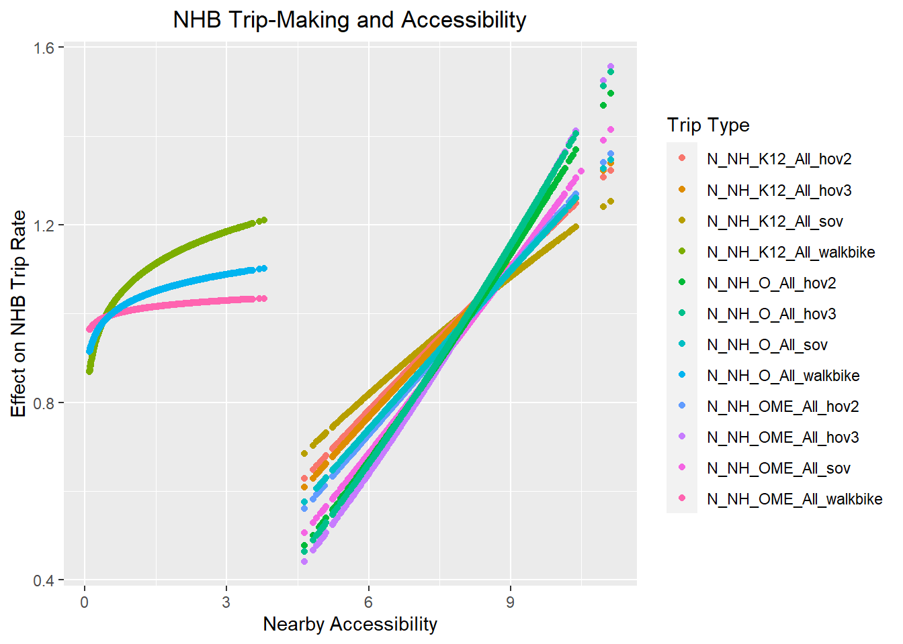

Non-Homebased Trips
Caliper Corporation
March 3, 2021
Introduction
There are many problems related to non-home-based trips in traditional trip-based models arising from the fact that they are disconnected from the home-based trips with which they comprise complete tours. In order to properly represent non-home-based trips, two spatial distribution or destination/spatial choice models are required to account for both the trip’s origin location and destination location. The four-step model architecture is fundamentally flawed because it produces non-home-based trips from only one trip distribution or spatial choice model.
To address these problems, the TRM adopts an alternative approach with a simple change to the structure of the trip-based model, running the non-home-based model components after and conditional on the home-based model components instead of in parallel and independently of them as in the traditional four-step model. This relatively simple structural change significantly improves the TRM’s ability to represent non-home-based trips and their response to land use changes and transportation infrastructure investments. Running a NHB distribution or destination choice model after and conditional on home-based destination choices in this approach, provides the required second spatial distribution model to properly model both the origin and destination of NHB trips.
In this approach, NHB trips are generated separately by mode based on home-based mode choices. This essentially provides information about whether a traveler has a car with them and allows the model, despite its trip-based form, to ensure a reasonable consistency of modes on tour.
Available modes include:
- SOV
- HOV2
- HOV3+
- Auto Pay
- Transit
- Bike
- Walk
The model coefficients below are the result of multiple linear regression with a forced intercept at zero. In addition, the model estimation will be scaled up to a predicted regional total. As a result of these two factors, the displayed r-squared values are not as meaningful. Instead, the value of the coefficients is in determining the relative effect that various home-based trip types have on non-home-based trip generation.
When reviewing the coefficients below, note their logical consistency: SOV NHB trips are most likely to result when the HB trip is SOV or HOV. NHB walk trips can be made when a person drives from home, but is more much more likely if they walk. These results greatly improve the TRMG2 NHB models compared to traditional trip-based construction.
Work tours
Each trip type below is a non-homebased trip on a work tour. Each tab shows a mode-specific model that estimates which homebased trips and modes generate that non-homebased trip and mode combination.
W_NH_EK12_All
These are non-homebased trips made on a work tour before or after dropping a child off at school. For example, a parent might drop off a child and then get gas before heading to work. The trip between school and the gas station is a W_NH_EK12_All trip.
SOV
| term | estimated_as | estimate | std.error | statistic | p.value |
|---|---|---|---|---|---|
| W_HB_EK12_All_hov2 | W_HB_EK12_All_hov | 0.7302 | 0.0087 | 83.5385 | 0.0000 |
| W_HB_EK12_All_hov3 | W_HB_EK12_All_hov | 0.7302 | 0.0087 | 83.5385 | 0.0000 |
| W_HB_O_All_hov2 | W_HB_O_All_hov | 0.0581 | 0.0086 | 6.7510 | 0.0000 |
| W_HB_O_All_hov3 | W_HB_O_All_hov | 0.0581 | 0.0086 | 6.7510 | 0.0000 |
| W_HB_O_All_sov | W_HB_O_All_sov | 0.0099 | 0.0056 | 1.7836 | 0.0746 |
| W_HB_O_All_walkbike | W_HB_O_All_walkbike | 0.0567 | 0.0202 | 2.8069 | 0.0050 |
| W_HB_W_All_hov2 | W_HB_W_All_auto | 0.0078 | 0.0034 | 2.3103 | 0.0209 |
| W_HB_W_All_hov3 | W_HB_W_All_auto | 0.0078 | 0.0034 | 2.3103 | 0.0209 |
| W_HB_W_All_sov | W_HB_W_All_auto | 0.0078 | 0.0034 | 2.3103 | 0.0209 |
| r_sq | NA | 0.0707 | NA | NA | NA |
HOV2
| term | estimated_as | estimate | std.error | statistic | p.value |
|---|---|---|---|---|---|
| W_HB_EK12_All_hov2 | W_HB_EK12_All_hov | 0.2450 | 0.0084 | 29.2010 | 0.000 |
| W_HB_EK12_All_hov3 | W_HB_EK12_All_hov | 0.2450 | 0.0084 | 29.2010 | 0.000 |
| W_HB_EK12_All_sov | W_HB_EK12_All_sov | 0.5122 | 0.0650 | 7.8830 | 0.000 |
| W_HB_O_All_hov2 | W_HB_O_All_auto | 0.0338 | 0.0043 | 7.8602 | 0.000 |
| W_HB_O_All_hov3 | W_HB_O_All_auto | 0.0338 | 0.0043 | 7.8602 | 0.000 |
| W_HB_O_All_sov | W_HB_O_All_auto | 0.0338 | 0.0043 | 7.8602 | 0.000 |
| W_HB_O_All_walkbike | W_HB_O_All_walkbike | 0.0579 | 0.0195 | 2.9692 | 0.003 |
| r_sq | NA | 0.1460 | NA | NA | NA |
HOV3+
| term | estimated_as | estimate | std.error | statistic | p.value |
|---|---|---|---|---|---|
| W_HB_EK12_All_hov2 | W_HB_EK12_All_hov | 0.0952 | 0.0065 | 14.5562 | 0 |
| W_HB_EK12_All_hov3 | W_HB_EK12_All_hov | 0.0952 | 0.0065 | 14.5562 | 0 |
| W_HB_O_All_hov2 | W_HB_O_All_auto | 0.0222 | 0.0034 | 6.6245 | 0 |
| W_HB_O_All_hov3 | W_HB_O_All_auto | 0.0222 | 0.0034 | 6.6245 | 0 |
| W_HB_O_All_sov | W_HB_O_All_auto | 0.0222 | 0.0034 | 6.6245 | 0 |
| r_sq | NA | 0.2188 | NA | NA | NA |
Auto Pay
No significant presence of this trip type in the survey (0 samples), and it is not an important source of travel demand. No model was estimated.
Transit
No significant presence of this trip type in the survey (3 samples), and it is not an important source of travel demand. No model was estimated.
Non-motorized (walk/bike)
| term | estimated_as | estimate | std.error | statistic | p.value |
|---|---|---|---|---|---|
| W_HB_EK12_All_walkbike | W_HB_EK12_All_walkbike | 1.0286 | 0.0235 | 43.7408 | 0 |
| r_sq | NA | 0.0001 | NA | NA | NA |
W_NH_WR_All
These are non-homebased trips made on a work tour where one trip end is related to work, but not the primary work location. A trip made to attend a business meeting is a good example.
SOV
| term | estimated_as | estimate | std.error | statistic | p.value |
|---|---|---|---|---|---|
| W_HB_EK12_All_hov2 | W_HB_EK12_All_auto | 0.3188 | 0.0315 | 10.1135 | 0 |
| W_HB_EK12_All_hov3 | W_HB_EK12_All_auto | 0.3188 | 0.0315 | 10.1135 | 0 |
| W_HB_EK12_All_sov | W_HB_EK12_All_auto | 0.3188 | 0.0315 | 10.1135 | 0 |
| W_HB_O_All_sov | W_HB_O_All_sov | 1.0419 | 0.0205 | 50.9485 | 0 |
| W_HB_O_All_walkbike | W_HB_O_All_walkbike | 0.6410 | 0.0743 | 8.6294 | 0 |
| W_HB_W_All_hov2 | W_HB_W_All_auto | 0.1452 | 0.0124 | 11.7132 | 0 |
| W_HB_W_All_hov3 | W_HB_W_All_auto | 0.1452 | 0.0124 | 11.7132 | 0 |
| W_HB_W_All_sov | W_HB_W_All_auto | 0.1452 | 0.0124 | 11.7132 | 0 |
| r_sq | NA | 0.5096 | NA | NA | NA |
HOV2
| term | estimated_as | estimate | std.error | statistic | p.value |
|---|---|---|---|---|---|
| W_HB_EK12_All_hov2 | W_HB_EK12_All_hov | 0.0298 | 0.0140 | 2.1308 | 0.0332 |
| W_HB_EK12_All_hov3 | W_HB_EK12_All_hov | 0.0298 | 0.0140 | 2.1308 | 0.0332 |
| W_HB_O_All_hov2 | W_HB_O_All_hov | 0.1966 | 0.0138 | 14.2624 | 0.0000 |
| W_HB_O_All_hov3 | W_HB_O_All_hov | 0.1966 | 0.0138 | 14.2624 | 0.0000 |
| W_HB_O_All_sov | W_HB_O_All_sov | 0.0942 | 0.0086 | 10.9441 | 0.0000 |
| W_HB_W_All_hov2 | W_HB_W_All_hov | 0.1631 | 0.0196 | 8.3102 | 0.0000 |
| W_HB_W_All_hov3 | W_HB_W_All_hov | 0.1631 | 0.0196 | 8.3102 | 0.0000 |
| r_sq | NA | 0.4152 | NA | NA | NA |
HOV3+
| term | estimated_as | estimate | std.error | statistic | p.value |
|---|---|---|---|---|---|
| W_HB_EK12_All_hov2 | W_HB_EK12_All_hov | 0.0734 | 0.0094 | 7.8300 | 0 |
| W_HB_EK12_All_hov3 | W_HB_EK12_All_hov | 0.0734 | 0.0094 | 7.8300 | 0 |
| W_HB_O_All_hov2 | W_HB_O_All_hov | 0.1953 | 0.0092 | 21.1466 | 0 |
| W_HB_O_All_hov3 | W_HB_O_All_hov | 0.1953 | 0.0092 | 21.1466 | 0 |
| W_HB_W_All_hov2 | W_HB_W_All_hov | 0.0996 | 0.0132 | 7.5681 | 0 |
| W_HB_W_All_hov3 | W_HB_W_All_hov | 0.0996 | 0.0132 | 7.5681 | 0 |
| r_sq | NA | 0.1880 | NA | NA | NA |
Auto Pay
| term | estimated_as | estimate | std.error | statistic | p.value |
|---|---|---|---|---|---|
| W_HB_O_All_auto_pay | W_HB_O_All_auto_pay | 1.4378 | 0.0506 | 28.3974 | 0 |
| W_HB_O_All_sov | W_HB_O_All_sov | 0.0481 | 0.0084 | 5.7372 | 0 |
| r_sq | NA | 0.0627 | NA | NA | NA |
Transit
| term | estimated_as | estimate | std.error | statistic | p.value |
|---|---|---|---|---|---|
| W_HB_O_All_t | W_HB_O_All_t | 1.0471 | 0.0503 | 20.8026 | 0.0000 |
| W_HB_W_All_hov2 | W_HB_W_All_hov | 0.0188 | 0.0099 | 1.9101 | 0.0562 |
| W_HB_W_All_hov3 | W_HB_W_All_hov | 0.0188 | 0.0099 | 1.9101 | 0.0562 |
| W_HB_W_All_t | W_HB_W_All_t | 0.2830 | 0.0167 | 16.9126 | 0.0000 |
| W_HB_O_All_walkbike | W_HB_WO_All_walkbike | 0.1231 | 0.0113 | 10.8816 | 0.0000 |
| W_HB_W_All_walkbike | W_HB_WO_All_walkbike | 0.1231 | 0.0113 | 10.8816 | 0.0000 |
| r_sq | NA | 0.0793 | NA | NA | NA |
Non-motorized
| term | estimated_as | estimate | std.error | statistic | p.value |
|---|---|---|---|---|---|
| W_HB_EK12_All_walkbike | W_HB_EK12_All_walkbike | 0.9101 | 0.3523 | 2.5829 | 0.0098 |
| W_HB_O_All_hov2 | W_HB_O_All_hov | 0.0498 | 0.0182 | 2.7400 | 0.0062 |
| W_HB_O_All_hov3 | W_HB_O_All_hov | 0.0498 | 0.0182 | 2.7400 | 0.0062 |
| W_HB_O_All_sov | W_HB_O_All_sov | 0.1546 | 0.0119 | 13.0327 | 0.0000 |
| W_HB_O_All_walkbike | W_HB_O_All_walkbike | 0.4891 | 0.0434 | 11.2800 | 0.0000 |
| W_HB_W_All_sov | W_HB_W_All_sov | 0.0208 | 0.0075 | 2.7719 | 0.0056 |
| W_HB_W_All_t | W_HB_W_All_t | 0.1785 | 0.0442 | 4.0379 | 0.0000 |
| W_HB_W_All_walkbike | W_HB_W_All_walkbike | 0.1795 | 0.0447 | 4.0129 | 0.0001 |
| r_sq | NA | 0.4553 | NA | NA | NA |
W_NH_O_All
These are non-homebased trips made on a work tour that are not related to work or dropping off children at school. In effect, these are all other non-homebased trips made on work tours. This would include stopping to get gas on your way from home to work.
SOV
| term | estimated_as | estimate | std.error | statistic | p.value |
|---|---|---|---|---|---|
| W_HB_EK12_All_hov2 | W_HB_EK12_All_auto | 0.0885 | 0.0213 | 4.1556 | 0 |
| W_HB_EK12_All_hov3 | W_HB_EK12_All_auto | 0.0885 | 0.0213 | 4.1556 | 0 |
| W_HB_EK12_All_sov | W_HB_EK12_All_auto | 0.0885 | 0.0213 | 4.1556 | 0 |
| W_HB_O_All_hov2 | W_HB_O_All_hov | 0.2290 | 0.0212 | 10.8226 | 0 |
| W_HB_O_All_hov3 | W_HB_O_All_hov | 0.2290 | 0.0212 | 10.8226 | 0 |
| W_HB_O_All_sov | W_HB_O_All_sov | 0.4167 | 0.0133 | 31.4275 | 0 |
| W_HB_O_All_walkbike | W_HB_O_All_walkbike | 0.3135 | 0.0498 | 6.2967 | 0 |
| r_sq | NA | 0.4607 | NA | NA | NA |
HOV2
| term | estimated_as | estimate | std.error | statistic | p.value |
|---|---|---|---|---|---|
| W_HB_O_All_hov2 | W_HB_O_All_hov | 0.1877 | 0.0126 | 14.9219 | 0.0000 |
| W_HB_O_All_hov3 | W_HB_O_All_hov | 0.1877 | 0.0126 | 14.9219 | 0.0000 |
| W_HB_O_All_sov | W_HB_O_All_sov | 0.0883 | 0.0079 | 11.1213 | 0.0000 |
| W_HB_O_All_walkbike | W_HB_O_All_walkbike | 0.1142 | 0.0298 | 3.8275 | 0.0001 |
| W_HB_W_All_hov2 | W_HB_W_All_hov2 | 0.0466 | 0.0214 | 2.1802 | 0.0293 |
| r_sq | NA | 0.3967 | NA | NA | NA |
HOV3+
| term | estimated_as | estimate | std.error | statistic | p.value |
|---|---|---|---|---|---|
| W_HB_O_All_hov2 | W_HB_O_All_hov2 | 0.0785 | 0.0153 | 5.1245 | 0 |
| W_HB_O_All_hov3 | W_HB_O_All_hov3 | 0.5670 | 0.0170 | 33.2922 | 0 |
| W_HB_W_All_hov3 | W_HB_W_All_hov3 | 0.3085 | 0.0302 | 10.2052 | 0 |
| r_sq | NA | 0.1003 | NA | NA | NA |
Auto Pay
No significant presence of this trip type in the survey (2 samples), and it is not an important source of travel demand. No model was estimated.
Transit
| term | estimated_as | estimate | std.error | statistic | p.value |
|---|---|---|---|---|---|
| W_HB_EK12_All_walkbike | W_HB_EK12_All_walkbike | 0.1268 | 0.0799 | 1.5879 | 0.1124 |
| W_HB_O_All_t | W_HB_O_All_t | 0.1178 | 0.0299 | 3.9353 | 0.0001 |
| W_HB_O_All_walkbike | W_HB_O_All_walkbike | 0.2186 | 0.0098 | 22.3131 | 0.0000 |
| W_HB_W_All_hov2 | W_HB_W_All_hov | 0.0177 | 0.0059 | 2.9843 | 0.0029 |
| W_HB_W_All_hov3 | W_HB_W_All_hov | 0.0177 | 0.0059 | 2.9843 | 0.0029 |
| r_sq | NA | 0.0283 | NA | NA | NA |
Non-motorized
| term | estimated_as | estimate | std.error | statistic | p.value |
|---|---|---|---|---|---|
| W_HB_O_All_sov | W_HB_O_All_auto | 0.0863 | 0.0065 | 13.3033 | 0.0000 |
| W_HB_O_All_walkbike | W_HB_O_All_walkbike | 0.3867 | 0.0236 | 16.4131 | 0.0000 |
| W_HB_W_All_sov | W_HB_W_All_sov | 0.0155 | 0.0041 | 3.7744 | 0.0002 |
| r_sq | NA | 0.3685 | NA | NA | NA |
Non-work tours
Each trip type below is a non-homebased trip made on a non-work tour. Each tab shows a mode-specific model that estimates which homebased trips and modes generate that non-homebased trip and mode combination.
For many of these trip types, the models have two additional parameters alpha and beta. These coefficients control the impact of zonal accessibility on the models and are discussed in detail in the next section.
N_NH_K12_All
These are non-homebased trips made on a non-work tour with one trip end at school (K-12). This includes children attending school and (non-working) parents dropping off children at school.
SOV
| term | estimated_as | estimate | std.error | statistic | p.value |
|---|---|---|---|---|---|
| N_HB_K12_All_hov2 | N_HB_K12_All_hov | 0.0399 | 0.0021 | 18.5695 | 0.0000 |
| N_HB_K12_All_hov3 | N_HB_K12_All_hov | 0.0399 | 0.0021 | 18.5695 | 0.0000 |
| N_HB_K12_All_sov | N_HB_K12_All_sov | 0.0164 | 0.0033 | 5.0209 | 0.0000 |
| N_HB_OD_Long_sov | N_HB_OD_All_sov | 0.0030 | 0.0015 | 2.0710 | 0.0384 |
| N_HB_OD_Short_sov | N_HB_OD_All_sov | 0.0030 | 0.0015 | 2.0710 | 0.0384 |
| alpha | NA | 0.2366 | 0.1663 | -11.3841 | 0.0000 |
| gamma | NA | 0.6921 | 0.0788 | 8.7818 | 0.0000 |
| r_sq | NA | 0.0819 | NA | NA | NA |
HOV2
| term | estimated_as | estimate | std.error | statistic | p.value |
|---|---|---|---|---|---|
| N_HB_K12_All_hov2 | N_HB_K12_All_hov2 | 0.0367 | 0.0026 | 13.9938 | 0.0000 |
| N_HB_K12_All_hov3 | N_HB_K12_All_hov3 | 0.0192 | 0.0024 | 7.9412 | 0.0000 |
| N_HB_K12_All_school_bus | N_HB_K12_All_school_bus | 0.0045 | 0.0024 | 1.8916 | 0.0586 |
| N_HB_OD_Long_hov2 | N_HB_OD_Long_hov | 0.0051 | 0.0014 | 3.5735 | 0.0004 |
| N_HB_OD_Long_hov3 | N_HB_OD_Long_hov | 0.0051 | 0.0014 | 3.5735 | 0.0004 |
| N_HB_OD_Short_hov2 | N_HB_OD_Short_hov2 | 0.0056 | 0.0027 | 2.0946 | 0.0362 |
| N_HB_OD_Short_hov3 | N_HB_OD_Short_hov3 | 0.0195 | 0.0028 | 7.0405 | 0.0000 |
| alpha | NA | 0.1691 | 0.1688 | -13.6614 | 0.0000 |
| gamma | NA | 0.8541 | 0.0800 | 10.6764 | 0.0000 |
| r_sq | NA | 0.1287 | NA | NA | NA |
HOV3+
| term | estimated_as | estimate | std.error | statistic | p.value |
|---|---|---|---|---|---|
| N_HB_K12_All_hov2 | N_HB_K12_All_hov | 0.0474 | 0.0023 | 20.2597 | 0.0000 |
| N_HB_K12_All_hov3 | N_HB_K12_All_hov | 0.0474 | 0.0023 | 20.2597 | 0.0000 |
| N_HB_OD_Long_hov2 | N_HB_OD_Long_hov2 | 0.0100 | 0.0029 | 3.4610 | 0.0005 |
| N_HB_OD_Long_hov3 | N_HB_OD_Long_hov3 | 0.0068 | 0.0027 | 2.5274 | 0.0115 |
| N_HB_OD_Short_hov2 | N_HB_OD_Short_hov2 | 0.0273 | 0.0037 | 7.4528 | 0.0000 |
| N_HB_OD_Short_hov3 | N_HB_OD_Short_hov3 | 0.0295 | 0.0038 | 7.8107 | 0.0000 |
| alpha | NA | 0.1516 | 0.2051 | -12.5910 | 0.0000 |
| gamma | NA | 0.9044 | 0.0972 | 9.3069 | 0.0000 |
| r_sq | NA | 0.1419 | NA | NA | NA |
Auto Pay
No significant presence of this trip type in the survey (1 sample), and it is not an important source of travel demand. No model was estimated.
Transit
No significant presence of this trip type in the survey (5 samples), and it is not an important source of travel demand. No model was estimated.
Non-motorized
| term | estimated_as | estimate | std.error | statistic | p.value |
|---|---|---|---|---|---|
| N_HB_K12_All_hov2 | N_HB_K12_All_auto | 0.0067 | 0.0009 | 7.0991 | 0.0000 |
| N_HB_K12_All_hov3 | N_HB_K12_All_auto | 0.0067 | 0.0009 | 7.0991 | 0.0000 |
| N_HB_K12_All_sov | N_HB_K12_All_auto | 0.0067 | 0.0009 | 7.0991 | 0.0000 |
| N_HB_K12_All_school_bus | N_HB_K12_All_school_bus | 0.0062 | 0.0017 | 3.5727 | 0.0004 |
| N_HB_K12_All_walkbike | N_HB_K12_All_walkbike | 0.0244 | 0.0054 | 4.4992 | 0.0000 |
| N_HB_OD_Short_hov2 | N_HB_OD_Short_hov | 0.0036 | 0.0013 | 2.6876 | 0.0072 |
| N_HB_OD_Short_hov3 | N_HB_OD_Short_hov | 0.0036 | 0.0013 | 2.6876 | 0.0072 |
| N_HB_OD_Short_walkbike | N_HB_OD_Short_walkbike | 0.0017 | 0.0011 | 1.5822 | 0.1136 |
| alpha | NA | 1.0720 | 0.0065 | -40.2507 | 0.0000 |
| gamma | NA | 0.0910 | 0.0087 | 10.4955 | 0.0000 |
| r_sq | NA | 0.0829 | NA | NA | NA |
N_NH_OME_All
These are non-homebased trips made on a non-work tour where neither trip end is a K12 school and at least one end is an “OME” activity type. This includes the most common reasons people spend money: shopping, dining, and maintenance activities.
SOV
| term | estimated_as | estimate | std.error | statistic | p.value |
|---|---|---|---|---|---|
| N_HB_OD_Long_hov2 | N_HB_OD_All_hov | 0.0185 | 0.0076 | 2.4247 | 0.0153 |
| N_HB_OD_Long_hov3 | N_HB_OD_All_hov | 0.0185 | 0.0076 | 2.4247 | 0.0153 |
| N_HB_OD_Short_hov2 | N_HB_OD_All_hov | 0.0185 | 0.0076 | 2.4247 | 0.0153 |
| N_HB_OD_Short_hov3 | N_HB_OD_All_hov | 0.0185 | 0.0076 | 2.4247 | 0.0153 |
| N_HB_OD_Long_sov | N_HB_OD_Long_sov | 0.0993 | 0.0099 | 10.0125 | 0.0000 |
| N_HB_OD_Short_sov | N_HB_OD_Short_sov | 0.0974 | 0.0145 | 6.7131 | 0.0000 |
| N_HB_OME_All_sov | N_HB_OME_All_sov | 0.5815 | 0.0092 | 63.2824 | 0.0000 |
| N_HB_OMED_All_sov | N_HB_OMED_All_sov | 0.2353 | 0.0297 | 7.9333 | 0.0000 |
| alpha | NA | 0.0830 | 0.3535 | -10.8639 | 0.0000 |
| gamma | NA | 1.1773 | 0.1672 | 7.0392 | 0.0000 |
| r_sq | NA | 0.5108 | NA | NA | NA |
HOV2
| term | estimated_as | estimate | std.error | statistic | p.value |
|---|---|---|---|---|---|
| N_HB_OD_Long_sov | N_HB_OD_All_sov | 0.0823 | 0.0078 | 10.5550 | 0.000 |
| N_HB_OD_Short_sov | N_HB_OD_All_sov | 0.0823 | 0.0078 | 10.5550 | 0.000 |
| N_HB_OD_Long_hov2 | N_HB_OD_Long_hov2 | 0.2285 | 0.0138 | 16.5960 | 0.000 |
| N_HB_OD_Short_hov2 | N_HB_OD_Short_hov2 | 0.1914 | 0.0175 | 10.9453 | 0.000 |
| N_HB_OME_All_hov2 | N_HB_OME_All_hov | 0.2704 | 0.0069 | 39.4149 | 0.000 |
| N_HB_OME_All_hov3 | N_HB_OME_All_hov | 0.2704 | 0.0069 | 39.4149 | 0.000 |
| N_HB_OME_All_sov | N_HB_OME_All_sov | 0.0271 | 0.0087 | 3.0956 | 0.002 |
| N_HB_OMED_All_hov2 | N_HB_OMED_All_hov2 | 0.3701 | 0.0309 | 11.9743 | 0.000 |
| alpha | NA | 0.1177 | 0.3718 | -10.7601 | 0.000 |
| gamma | NA | 1.0162 | 0.1760 | 5.7743 | 0.000 |
| r_sq | NA | 0.5572 | NA | NA | NA |
HOV3+
| term | estimated_as | estimate | std.error | statistic | p.value |
|---|---|---|---|---|---|
| N_HB_OD_Long_hov3 | N_HB_OD_Long_hov3 | 0.1441 | 0.0091 | 15.7844 | 0.0000 |
| N_HB_OD_Short_hov2 | N_HB_OD_Short_hov2 | 0.0459 | 0.0124 | 3.7176 | 0.0002 |
| N_HB_OD_Short_hov3 | N_HB_OD_Short_hov3 | 0.1455 | 0.0128 | 11.3945 | 0.0000 |
| N_HB_OME_All_hov2 | N_HB_OME_All_hov2 | 0.0120 | 0.0061 | 1.9547 | 0.0506 |
| N_HB_OME_All_hov3 | N_HB_OME_All_hov3 | 0.5137 | 0.0083 | 61.9581 | 0.0000 |
| N_HB_OME_All_sov | N_HB_OME_All_sov | 0.0129 | 0.0062 | 2.0825 | 0.0373 |
| N_HB_OMED_All_hov3 | N_HB_OMED_All_hov3 | 0.2360 | 0.0325 | 7.2659 | 0.0000 |
| alpha | NA | 0.0481 | 0.2887 | -14.1442 | 0.0000 |
| gamma | NA | 1.4434 | 0.1367 | 10.5586 | 0.0000 |
| r_sq | NA | 0.3814 | NA | NA | NA |
Auto Pay
| term | estimated_as | estimate | std.error | statistic | p.value |
|---|---|---|---|---|---|
| N_HB_OD_Short_auto_pay | N_HB_OD_Short_auto_pay | 0.4897 | 0.0706 | 6.9356 | 0 |
| N_HB_OME_All_auto_pay | N_HB_OME_All_auto_pay | 1.4383 | 0.0199 | 72.1719 | 0 |
| r_sq | NA | 0.0410 | NA | NA | NA |
Transit
| term | estimated_as | estimate | std.error | statistic | p.value |
|---|---|---|---|---|---|
| N_HB_OD_Long_t | N_HB_OD_Long_t | 0.0459 | 0.0076 | 6.0286 | 0 |
| N_HB_OD_Short_t | N_HB_OD_Short_t | 0.2966 | 0.0095 | 31.0721 | 0 |
| N_HB_OME_All_t | N_HB_OME_All_t | 0.3038 | 0.0076 | 40.1230 | 0 |
| N_HB_OME_All_walkbike | N_HB_OME_All_walkbike | 0.0099 | 0.0024 | 4.1155 | 0 |
| alpha | NA | 1.0393 | 0.0042 | -13.8303 | 0 |
| gamma | NA | -0.0397 | 0.0040 | -9.8675 | 0 |
| r_sq | NA | 0.0403 | NA | NA | NA |
Non-motorized
| term | estimated_as | estimate | std.error | statistic | p.value |
|---|---|---|---|---|---|
| N_HB_K12_All_t | N_HB_K12_All_t | 0.0802 | 0.0493 | 1.6272 | 0.1037 |
| N_HB_OD_Long_auto_pay | N_HB_O_All_auto_pay | 0.0650 | 0.0065 | 9.9629 | 0.0000 |
| N_HB_OD_Short_auto_pay | N_HB_O_All_auto_pay | 0.0650 | 0.0065 | 9.9629 | 0.0000 |
| N_HB_OME_All_auto_pay | N_HB_O_All_auto_pay | 0.0650 | 0.0065 | 9.9629 | 0.0000 |
| N_HB_OMED_All_auto_pay | N_HB_O_All_auto_pay | 0.0650 | 0.0065 | 9.9629 | 0.0000 |
| N_HB_OD_Long_t | N_HB_OD_All_t | 0.0819 | 0.0227 | 3.6038 | 0.0003 |
| N_HB_OD_Short_t | N_HB_OD_All_t | 0.0819 | 0.0227 | 3.6038 | 0.0003 |
| N_HB_OD_Long_walkbike | N_HB_OD_Long_walkbike | 0.0417 | 0.0080 | 5.2362 | 0.0000 |
| N_HB_OD_Short_sov | N_HB_OD_Short_sov | 0.0143 | 0.0057 | 2.5349 | 0.0113 |
| N_HB_OD_Short_walkbike | N_HB_OD_Short_walkbike | 0.0160 | 0.0041 | 3.9458 | 0.0001 |
| N_HB_OME_All_hov2 | N_HB_OME_All_hov | 0.0087 | 0.0028 | 3.0945 | 0.0020 |
| N_HB_OME_All_hov3 | N_HB_OME_All_hov | 0.0087 | 0.0028 | 3.0945 | 0.0020 |
| N_HB_OME_All_sov | N_HB_OME_All_sov | 0.0255 | 0.0036 | 7.0736 | 0.0000 |
| N_HB_OME_All_t | N_HB_OME_All_t | 0.0688 | 0.0288 | 2.3867 | 0.0170 |
| N_HB_OME_All_walkbike | N_HB_OME_All_walkbike | 0.1991 | 0.0091 | 21.8193 | 0.0000 |
| N_HB_OMED_All_walkbike | N_HB_OME_All_walkbike | 0.1991 | 0.0091 | 21.8193 | 0.0000 |
| N_HB_OMED_All_hov2 | N_HB_OMED_All_hov | 0.0214 | 0.0105 | 2.0353 | 0.0418 |
| N_HB_OMED_All_hov3 | N_HB_OMED_All_hov | 0.0214 | 0.0105 | 2.0353 | 0.0418 |
| alpha | NA | 1.0079 | 0.0141 | -85.4102 | 0.0000 |
| gamma | NA | 0.0194 | 0.0188 | 1.0340 | 0.3012 |
| r_sq | NA | 0.3456 | NA | NA | NA |
N_NH_O_All
These non-home-based trips are those where neither end is a K12 school or a shopping/dining/maintenance activity (OME). In effect, these are all other non-homebased trips made on non-work tours. Visiting friends or family at their home is an example of this trip type.
SOV
| term | estimated_as | estimate | std.error | statistic | p.value |
|---|---|---|---|---|---|
| N_HB_OD_Long_hov2 | N_HB_OD_All_hov | 0.0227 | 0.0038 | 5.9216 | 0 |
| N_HB_OD_Long_hov3 | N_HB_OD_All_hov | 0.0227 | 0.0038 | 5.9216 | 0 |
| N_HB_OD_Short_hov2 | N_HB_OD_All_hov | 0.0227 | 0.0038 | 5.9216 | 0 |
| N_HB_OD_Short_hov3 | N_HB_OD_All_hov | 0.0227 | 0.0038 | 5.9216 | 0 |
| N_HB_OD_Long_sov | N_HB_OD_All_sov | 0.1034 | 0.0041 | 25.0487 | 0 |
| N_HB_OD_Short_sov | N_HB_OD_All_sov | 0.1034 | 0.0041 | 25.0487 | 0 |
| N_HB_OME_All_sov | N_HB_OME_All_sov | 0.0293 | 0.0044 | 6.6881 | 0 |
| N_HB_OMED_All_sov | N_HB_OME_All_sov | 0.0293 | 0.0044 | 6.6881 | 0 |
| alpha | NA | 0.1291 | 0.2933 | -11.8332 | 0 |
| gamma | NA | 0.9733 | 0.1390 | 7.0035 | 0 |
| r_sq | NA | 0.3879 | NA | NA | NA |
HOV2
| term | estimated_as | estimate | std.error | statistic | p.value |
|---|---|---|---|---|---|
| N_HB_OD_Long_hov2 | N_HB_OD_Long_auto | 0.0214 | 0.0038 | 5.6704 | 0.000 |
| N_HB_OD_Long_hov3 | N_HB_OD_Long_auto | 0.0214 | 0.0038 | 5.6704 | 0.000 |
| N_HB_OD_Long_sov | N_HB_OD_Long_auto | 0.0214 | 0.0038 | 5.6704 | 0.000 |
| N_HB_OD_Short_hov2 | N_HB_OD_Short_hov | 0.1258 | 0.0071 | 17.8227 | 0.000 |
| N_HB_OD_Short_hov3 | N_HB_OD_Short_hov | 0.1258 | 0.0071 | 17.8227 | 0.000 |
| N_HB_OD_Short_sov | N_HB_OD_Short_sov | 0.1571 | 0.0081 | 19.4681 | 0.000 |
| N_HB_OME_All_hov2 | N_HB_OME_All_hov | 0.0117 | 0.0040 | 2.9695 | 0.003 |
| N_HB_OME_All_hov3 | N_HB_OME_All_hov | 0.0117 | 0.0040 | 2.9695 | 0.003 |
| N_HB_OME_All_sov | N_HB_OME_All_sov | 0.0112 | 0.0050 | 2.2259 | 0.026 |
| N_HB_OMED_All_hov2 | N_HB_OMED_All_hov | 0.1000 | 0.0147 | 6.7909 | 0.000 |
| N_HB_OMED_All_hov3 | N_HB_OMED_All_hov | 0.1000 | 0.0147 | 6.7909 | 0.000 |
| alpha | NA | 0.0637 | 0.2847 | -14.8558 | 0.000 |
| gamma | NA | 1.3107 | 0.1349 | 9.7150 | 0.000 |
| r_sq | NA | 0.3415 | NA | NA | NA |
HOV3+
| term | estimated_as | estimate | std.error | statistic | p.value |
|---|---|---|---|---|---|
| N_HB_K12_All_hov2 | N_HB_K12_All_auto | 0.0466 | 0.0037 | 12.6062 | 0.0000 |
| N_HB_K12_All_hov3 | N_HB_K12_All_auto | 0.0466 | 0.0037 | 12.6062 | 0.0000 |
| N_HB_K12_All_sov | N_HB_K12_All_auto | 0.0466 | 0.0037 | 12.6062 | 0.0000 |
| N_HB_OD_Long_hov2 | N_HB_OD_Long_auto | 0.0274 | 0.0028 | 9.6334 | 0.0000 |
| N_HB_OD_Long_hov3 | N_HB_OD_Long_auto | 0.0274 | 0.0028 | 9.6334 | 0.0000 |
| N_HB_OD_Long_sov | N_HB_OD_Long_auto | 0.0274 | 0.0028 | 9.6334 | 0.0000 |
| N_HB_OD_Short_hov2 | N_HB_OD_Short_hov2 | 0.0707 | 0.0077 | 9.1412 | 0.0000 |
| N_HB_OD_Short_hov3 | N_HB_OD_Short_hov3 | 0.1584 | 0.0078 | 20.2683 | 0.0000 |
| N_HB_OD_Short_sov | N_HB_OD_Short_sov | 0.0135 | 0.0061 | 2.2060 | 0.0274 |
| N_HB_OME_All_hov2 | N_HB_OME_All | 0.0052 | 0.0023 | 2.2095 | 0.0272 |
| N_HB_OME_All_hov3 | N_HB_OME_All | 0.0052 | 0.0023 | 2.2095 | 0.0272 |
| N_HB_OME_All_sov | N_HB_OME_All | 0.0052 | 0.0023 | 2.2095 | 0.0272 |
| alpha | NA | 0.0561 | 0.2703 | -16.1792 | 0.0000 |
| gamma | NA | 1.3763 | 0.1281 | 10.7440 | 0.0000 |
| r_sq | NA | 0.2719 | NA | NA | NA |
Auto Pay
| term | estimated_as | estimate | std.error | statistic | p.value |
|---|---|---|---|---|---|
| N_HB_OD_Long_auto_pay | N_HB_OD_Long_auto_pay | 0.0389 | 0.0078 | 5.0158 | 0.0000 |
| N_HB_OD_Short_auto_pay | N_HB_OD_Short_auto_pay | 0.0897 | 0.0273 | 3.2890 | 0.0010 |
| N_HB_OD_Short_sov | N_HB_OD_Short_sov | 0.0057 | 0.0040 | 1.4174 | 0.1564 |
| r_sq | NA | 0.0482 | NA | NA | NA |
Transit
| term | estimated_as | estimate | std.error | statistic | p.value |
|---|---|---|---|---|---|
| N_HB_OD_Long_t | N_HB_OD_Long_t | 0.0732 | 0.0139 | 5.2754 | 0.0000 |
| N_HB_OD_Short_sov | N_HB_OD_Short_sov | 0.0084 | 0.0027 | 3.1071 | 0.0019 |
| N_HB_OD_Short_t | N_HB_OD_Short_t | 0.6750 | 0.0182 | 37.1331 | 0.0000 |
| N_HB_OD_Short_walkbike | N_HB_OD_Short_walkbike | 0.0030 | 0.0019 | 1.5607 | 0.1186 |
| N_HB_OME_All_t | N_HB_OME_All_t | 0.0786 | 0.0138 | 5.6895 | 0.0000 |
| N_HB_OMED_All_t | N_HB_OMED_All_t | 0.4685 | 0.0261 | 17.9308 | 0.0000 |
| alpha | NA | 1.0090 | 0.0060 | -27.7691 | 0.0000 |
| gamma | NA | -0.0148 | 0.0058 | -2.5485 | 0.0108 |
| r_sq | NA | 0.0429 | NA | NA | NA |
Non-motorized
| term | estimated_as | estimate | std.error | statistic | p.value |
|---|---|---|---|---|---|
| N_HB_OD_Long_walkbike | N_HB_OD_Long_walkbike | 0.0413 | 0.0090 | 4.5835 | 0.0000 |
| N_HB_OD_Short_sov | N_HB_OD_OME_sov | 0.0281 | 0.0034 | 8.2760 | 0.0000 |
| N_HB_OME_All_sov | N_HB_OD_OME_sov | 0.0281 | 0.0034 | 8.2760 | 0.0000 |
| N_HB_OD_Short_hov2 | N_HB_OD_Short_hov2 | 0.0220 | 0.0082 | 2.6908 | 0.0071 |
| N_HB_OD_Short_hov3 | N_HB_OD_Short_hov3 | 0.0698 | 0.0084 | 8.3224 | 0.0000 |
| N_HB_OD_Short_walkbike | N_HB_OD_Short_walkbike | 0.0307 | 0.0046 | 6.6667 | 0.0000 |
| N_HB_OME_All_walkbike | N_HB_OME_All_walkbike | 0.1097 | 0.0104 | 10.5965 | 0.0000 |
| alpha | NA | 1.0289 | 0.0155 | -71.8819 | 0.0000 |
| gamma | NA | 0.0513 | 0.0205 | 2.4997 | 0.0124 |
| r_sq | NA | 0.2884 | NA | NA | NA |
Boosting charts
TODO: Vince add intro
TODO: Kyle to remove transit boosting given reverse relationship
The chart below shows how accessibility impacts each trip type. The y-axis is a simple factor. When the factor is 1, the trip rates will be the same as displayed in the tables above. A y-value of 0.5 means the trip rates will be reduced by 50 percent. Conversely, a y-value of 1.5 means that trip rates are increased by 50 percent. Due to this boosting model, the TRMG2 will understand that NHB making is more likely when traveling to a central business district compared to a rural zone.
While no zone in the Triangle region has an auto accessibility below four, walk and transit accessibilities can approach zero. If a zone has no transit accessibility, the boosted model will ensure that no NHB transit trips are produced.
For NHB auto trips, the slope of the line indicates the sensitivity to accessibility. For example, the least sensitive trip is the K12 SOV trip, which can be made after a parent drops a child off at school. For these trips, the accessibility of the school zone is not as important. On the other hand, group shopping trips (OME HOV) are the most sensitive to accessibility. These relationships between trip type and sensitivity to accessibility are intuitive.

Chained NHB Trips
The models above predict non-home-based trips using home-based trip ends; however, multiple NHB trips can be chained together. Three NHB trips in a row result in a middle trip where neither trip end is coincident with an HB attraction from the same tour. If these chained NHB trips have a different distribution pattern, then HB attractions would not be sufficient to predict the full range of NHB behavior.
In previous work, Caliper tested this question and repeatedly found that the pattern of these chained NHB trips are not significantly different. Caliper used the Triangle survey to confirm this assumption for the TRMG2. To do this, the HB attractions and NHB trip ends were aggregated to the TAZ and correlation was computed. The correlation value of 0.817 confirms that these chained trips in are also highly correlated with HB trip attractions. Their patterns can be adequately captured by the NHB models already estimated. Other than calibration to ensure accurate NHB trip totals, no special handling is needed.
The two maps below show this correlation visually.
HB Attractions

NH Trip Ends

Caliper Corporation, 2021